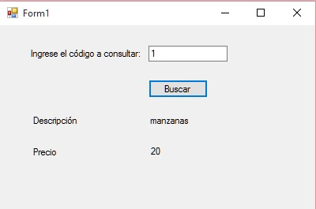

En el concepto anterior recuperamos todos los registros de una tabla. Ahora veremos como podemos rescatar uno en particular.
Problema
Implementar la consulta de un artículo ingresando por teclado el código y recuperando la descripción y el precio.
Crear un proyecto llamado: PruebaBaseDatos4 y definir la siguiente interfaz visual:
5 objeto de la clase Label. 1 objeto de la clase Button. 1 objeto de la clase TextBox.

En el evento Click procedemos a buscar el código del artículo ingresado en el TextBox. El código fuente es:
using System;
using System.Collections.Generic;
using System.ComponentModel;
using System.Data;
using System.Drawing;
using System.Linq;
using System.Text;
using System.Threading.Tasks;
using System.Windows.Forms;
using System.Data.SqlClient;
namespace PruebaBaseDatos4
{
public partial class Form1 : Form
{
public Form1()
{
InitializeComponent();
}
private void button1_Click(object sender, EventArgs e)
{
SqlConnection conexion = new SqlConnection("server=DIEGO-PC\\SQLEXPRESS ; database=base1 ; integrated security = true");
conexion.Open();
string cod = textBox1.Text;
string cadena = "select descripcion, precio from articulos where codigo="+cod;
SqlCommand comando = new SqlCommand(cadena, conexion);
SqlDataReader registro = comando.ExecuteReader();
if (registro.Read())
{
label4.Text = registro["descripcion"].ToString();
label5.Text = registro["precio"].ToString();
}
else
MessageBox.Show("No existe un artículo con el código ingresado");
conexion.Close();
}
}
}
Importamos el espacio de nombres:
using System.Data.SqlClient;
En el evento Click del botón buscar procedemos a conectarnos con el motor de base de datos y abrir la conexión:
SqlConnection conexion = new SqlConnection("server=DIEGO-PC\\SQLEXPRESS ; database=base1 ; integrated security = true");
conexion.Open();
Seguidamente confeccionamos un string con el comando SQL select para recuperar la descripción y el precio del artículo cuyo código coincide con el valor ingresado por teclado:
string cadena = "select descripcion, precio from articulos where codigo="+cod;
Creamos un objeto de la clase SqlCommand pasando el comando SQL y la referencia a la conexión:
SqlCommand comando = new SqlCommand(cadena, conexion);
Recuperamos un objeto de la clase SqlDataReader que retorna el objeto de la clase SqlCommand mediante el llamando al método EcecuteReader:
SqlDataReader registro = comando.ExecuteReader();
Si el resultado del comando select recuperó un registro de la tabla articulos luego la llamada al método Read se verifica verdadero y procedemos a mostrar el resultado por pantalla:
if (registro.Read())
{
label4.Text = registro["descripcion"].ToString();
label5.Text = registro["precio"].ToString();
}
En el caso que hayamos ingresado un código inexistente procedemos a mostrar un mensaje por el else:
else
MessageBox.Show("No existe un artículo con el código ingresado");
La interfaz en funcionamiento es:
